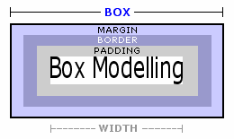

The box model is a very important concept, one that you must have in mind
before you start tackling all this spacing stuff. All HTML block-level elements
have five spacing properties: height, width, margin, border and padding. When
discussing these attributes you'll need a diagram to see what part of the spacing
we're talking about. Have a look at the diagram below and check out the three
areas that surround every block-level page element. Together, they form the
box that the element takes up.
There are two types of elements in HTML: block-level/structural elements and inline/phrasing elements. Block-level or structural elements generally start
in a new line, have space above and below and by default occupy the full width of the page. something that doesn't apply to inline-level elements. You can remove the block level characteristics by adding the declaration-display:none; We demonstrated this with the li tag which is by definition a structural tag.

The Box Model Attributes
Default margins, borders and padding are all 0, so when you wrap a div around
text, there is no space between its edges and the text. div elements obey
the box model strictly, while adding padding etc. to table cells can be interpreted
a bit more loosely by browsers. Default widths for all block-level elements
are 100%. The height of an element relies entirely on its contents. The margins,
borders and padding you add to each element are then added on to these dimensions.
Margins
Margins are the invisible space outside of the borders in the box model. By
default they are set to 0 (exept for the <body> tag which has built-in content margins. Margins can be added to anything — tables, graphics and text. We can use margins to place content. Top, right, bottom and left margins can be applied equally or independently. Margins can even be applied negatively...hummm, I wonder what that would look like?
Padding
Padding works pretty much the exact same way as margin, except it's inside any borders you've put in place. You use the same units and can affect each
side separately as before, but you can't use negative values for padding. Wouldn't
make any sense anyway. You can use a shorthand property for padding too, identical
to the one for margins.
Borders
Borders are styled lines, dots or dashes that surround the padding in the
box model. Like other box model attributes they can be applied uniformly or
independently to box content or set individual lines at bottom, top, left or
right of the content.
Special Effects
Transparent Boxes
Transparence can be applied a couple ways. You can add an opacity property if you want everything in the container to be transparent. With CSS3 you can more specifically target the background color of the container and leave the contents, such as text, unchanged. Use the the following declaration-background: rgba(50,50,50,.5);
Rounded Corners On Boxes
Boxes can be styled with rounded corners too. Browsers have been slow in adopting this attribute consistently. But now it looks very consistent in the most common browsers.